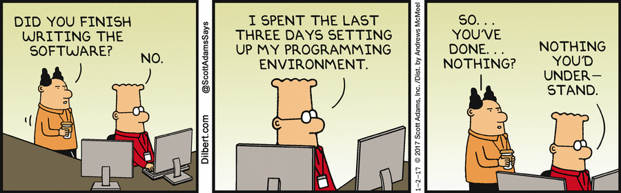

Cytel is the first CRO involved in the {admiral} open-source project. Having the ambition to demonstrate our skills in the open-source projects, it was with lots of excitement that we accepted the challenge to enter the {admiral} development team family. We are thus thrilled to share with you this new & challenging experience.
What experience we had when we started
As a starting point, we went through the {admiral} documentation, and how to create a package websites to get familiar with the work and processes. There is no need to memorize everything, it’s only to get an overview and know that the documentation is available and can be reviewed at any time. Then, we were encouraged to take on and resolve our first dummy issue which was to create an initial and easy function. This was a concrete example to proceed with the full process of creation, documentation and building site. What was amazing is that we have received so much support from the {admiral} Community on how to get started with this dummy issue.
Moreover, weekly meetings were set up for the first few weeks between ourselves and one of the {admiral} team members to support our integration in the team and to address any queries or issues we may have. This helped us a lot to familiarize ourselves with the processes and requirements of this open-source project.
In addition to these meetings, the full core development team meets bi-weekly to discuss and dispatch the tasks within the team, as well as issues newcomers are facing during their on-boarding. Before a new version is released, these bi-weekly meetings becomes a weekly meeting.
All this support made us feel good and gave us the confidence in tackling and fixing the issues, as well as with the entire {admiral} process.
How we upskilled
During this ongoing open-source experience, we have had the opportunity to dive into a couple of existing issues that have expanded our technical knowledge. We have worked with various packages such as {devtools} and {pkgdown} that are themselves used for the creation and maintenance of R packages. We also sharpened our problem-solving abilities. We received guidance from {admiral} team’s expertise on how to address the issues and improve our implementation; these helped us improve the quality of our code and broaden our understanding of best practices in development with their insights and suggestions.
{admiral} is not only developing code. It is also the development of the corresponding documentation and vignettes, as well as maintaining the online user guideline. This is also a forum where colleagues and users share opinions, what they think, how they would resolve an issue or how it is handled in their own company. There’s also a lot of communication around individual topics.
While completing tasks or resolving bugs which were identified in existing functions, it requires digging into the corresponding functions and learning how exactly they work. By becoming an {admiral} developer, we also become an {admiral} user.
The tasks are numerous and can correspond to any programming level.
What have been the challenges/learnings
In terms of challenges, setting up the environment was time consuming. Of course, the main environment is company dependent, but following the first setup, there can be challenges to make the {admiral} package work as expected.
Some packages are required to run single steps. As the {renv} package has been deprecated for the use of {admiral} earlier this year, a single step is now necessary: devtools::install_dev_deps(dependencies = TRUE). You just need to know it. Once all necessary packages are well installed and launched, it can be very easy to start developing some code or resolve some issues.
Also, at the beginning, Github (where {admiral} is developed and discussed) can be scary and may seem complicated due to the potential for mistakes. It’s pretty hard to make a mistake that might impact the whole project as you can’t push to main directly. While going through the processes and learning how it exactly works, it’s most of the time a simple process, and while working on the right parallel branch, nothing serious can happen. This is the most important point of working with Github: work on the right parallel branch, never/rarely on the main branch directly!
Another challenge is to understand the automatic CI/CD (Continuous Integration / Continuous Delivery) checks and their dependencies with other packages such as {admiraldev}. The CI/CD checks are used to ensure any code updates we make won’t break anything else in the codebase. These checks are implemented within the {admiralci} package and used in {admiral} when you create a Pull request. Those updates can thus have some impacts on the {admiral} package itself.
Reflection
On reflection, we didn’t see a substantial difference when coming from a CRO rather than coming from a Pharma company. But it might actually be the exposure to R which could differ. Indeed, while coming from a CRO, the tasks and projects depend on the clients we work for. We have been lucky to work on a project using R and Github for the past two years before joining the {admiral} team. We have to admit that this previous experience helped us a lot during the on-boarding.
What have we enjoyed
Becoming a co-developer and active contributor to {admiral} was an excellent opportunity for us to learn and to grow, and a challenge which we accepted with enthusiasm. By utilizing our backend expertise, we demonstrated our ability to adapt to new programming languages, frameworks, and tools. By working on this open-source package, we were able to expand our technical horizons and strengthen our problem-solving abilities.
Overall, our experience as a developer working on open-source projects has equipped us with essential skills in teamwork, communication, conflict resolution, and leadership.
What we enjoyed the most in this cross-company project is the team spirit and sharing of knowledge. You learn that there is no stupid question, and in addition to the mentoring that you receive at the beginning you are free to ask any questions and can be ensured to receive various valuable answers and suggestions. The process is also quite meticulous and painstakingly documented. You can’t really make any mistakes, and if something goes wrong, there won’t be any impact on the project: before merging your own updates to the main branch, a Pull Request with a reviewer and an approval is necessary. Some updates can be requested before being approved and merged as needed, which makes us feel more comfortable and confident.
As there is no such thing as zero risk, if such a situation occurs, it will most likely be discovered and can be fixed for the next release.
Comments are always welcome, whatever it is, but our favorite one in the process is the “Well done!”: Pat yourself on the back for a job well done! Much love to your accomplishment!
We are looking forward to praising ourselves over and over again.
Last updated
2024-06-04 19:27:36.967129
Details
Reuse
Citation
BibTeX citation:
@online{gautier2024,
author = {Gautier, Fanny and Patil, Lina},
title = {Our Experience as New Admiral Developers, Coming from a
{CRO}},
date = {2024-05-29},
url = {https://pharmaverse.github.io/blog/posts/2024-05-21_our_experience_a.../our_experience_as_new_admiral_developers.html},
langid = {en}
}
For attribution, please cite this work as:
Gautier, Fanny, and Lina Patil. 2024. “Our Experience as New
Admiral Developers, Coming from a CRO.” May 29, 2024. https://pharmaverse.github.io/blog/posts/2024-05-21_our_experience_a.../our_experience_as_new_admiral_developers.html.